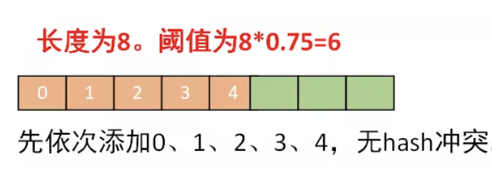
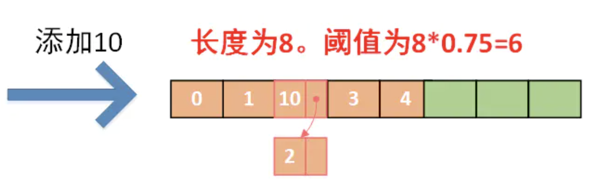
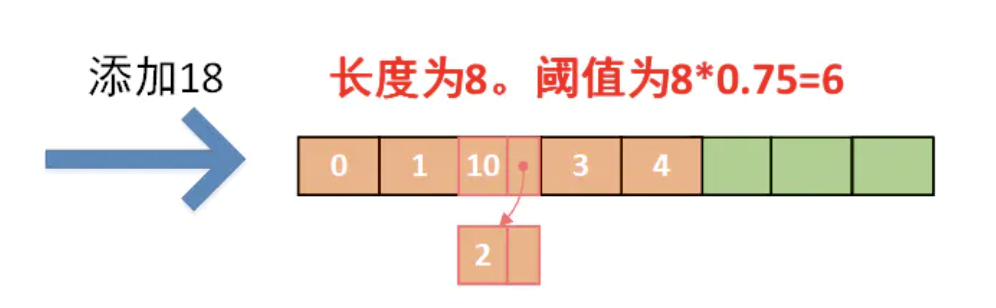
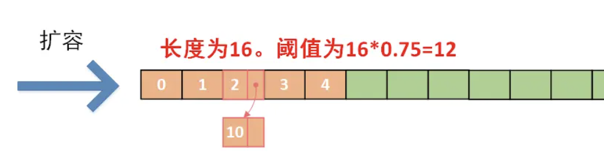
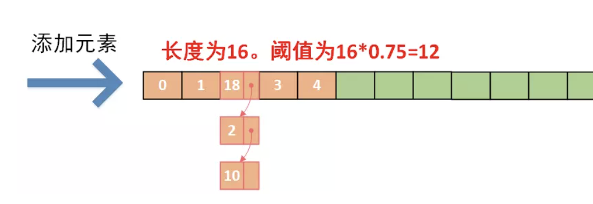

HashMap的总结总算到了最后一期，目前就自己了解到的来说关于hashmap的最后三点。其实还是会说很多废话，因为所有的答案在源码中都已经有了解读，在这里我只能说做一些自我的理解，方便大家理解hashMap。废话不多说，进入到我们今天的总结：
-
hashMap为什么会死循环？
-
头插入和尾插入区别
1.hashMap为什么会死循环？（待完成）
很多人都说hashMap会死循环，死循环主要是出现在多线程中的扩容情况下导致的，也就是插入数据，1.7 HashMap一次扩容的过程：
-
取当前table的2倍作为新table的大小
-
根据算出的新table的大小new出一个新的Entry数组来，名为newTable
-
轮询原table的每一个位置，将每个位置上连接的Entry，算出在新table上的位置，并以链表形式连接
-
原table上的所有Entry全部轮询完毕之后，意味着原table上面的所有Entry已经移到了新的table上，HashMap中的table指向newTable
代码中主要是以下：
void resize(int newCapacity)
{
Entry[] oldTable = table;
int oldCapacity = oldTable.length;
......
//创建一个新的Hash Table
Entry[] newTable = new Entry[newCapacity];
//将Old Hash Table上的数据迁移到New Hash Table上
transfer(newTable);
table = newTable;
threshold = (int)(newCapacity * loadFactor);
}
void transfer(Entry[] newTable)
{
Entry[] src = table;
int newCapacity = newTable.length;
//下面这段代码的意思是：
// 从OldTable里摘一个元素出来，然后放到NewTable中
for (int j = 0; j < src.length; j++) {
Entry<K,V> e = src[j];
if (e != null) {
src[j] = null;
do {
Entry<K,V> next = e.next;//线程1 执行到这里停滞，e为10，next为2。CPU调度线程2继续执行
int i = indexFor(e.hash, newCapacity);
e.next = newTable[i];
newTable[i] = e;
e = next;
} while (e != null);
}
}
}
下面我们说明如何死循环的再多线程条件下：
线程1添加18需要扩容，线程2添加20需要扩容：
2.头插入和尾插入区别？
1.8之前采用的是头插入方法。1.8采用的是尾插入头插法是操作速度最快的，找到数组位置就直接找到插入位置了，jdk8之前hashmap这种插入方法在并发场景下如果多个线程同时扩容会出现循环列表。jdk8开始hashmap链表在节点长度达到8之后会变成红黑树，这样一来在数组后节点长度不断增加时，遍历一次的次数就会少很多很多（否则每次要遍历所有），相比头插法而言，尾插法操作额外的遍历消耗已经小很多了，也可以避免之前的循环列表问题。1.7扩容时需要重新计算哈希值和索引位置，1.8并不重新计算哈希值，巧妙地采用和扩容后容量进行&操作来计算新的索引位置。
1.7头插入举例说明：（大致意思，真正的hash是调用object的）





1.8的尾插入法：跟上面1.7头插入扩容之后的图不同，其他的条件是一样。1.8的扩容是不需要重新计算hash的，而是采用&操作的，直接还是原来的位置。
我等采石之人，当心怀大教堂之愿景！
欢迎关注我的公众号！！